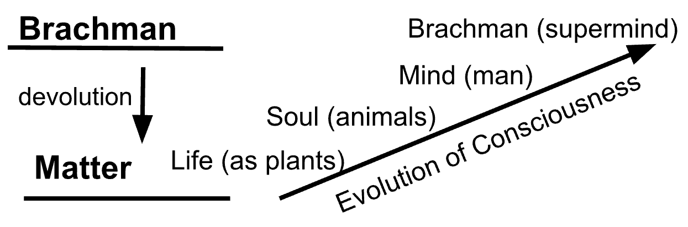

Course: Eastern Religious Traditions
Lecture #6: Medieval arrivals in India
Christians and Jews
- It is a mistake to call these religions non-Indian since even the Vedic religion came from outside. After centuries in India most have adopted Indian culture and national goals.
- Christianity was present before the medieval period but had no firm base until the arrival of Jesuit missionaries in the 16th century. Tradition states that St. Thomas came to India in 52 A.D. and preached, establishing several churches on the Malabar coast. The strongest historical evidence says that in the fourth century, Christians migrated from Persia and Mesopotamia.
- The largest portion are Roman Catholics who became influential with the rise of Portuguese power in the early sixteenth century. They exist as a large minority force in the state of Kerala today. Protestants arrived in the late 18th century and rapidly as both protestants and catholics put a high premium on education. Between them, they established nearly 100 colleges, 900 high schools, thousands of primary and middle schools and many teacher training schools.
- Over 500 Christian sponsored hospitals and dispensaries were also established throughout India and Pakistan.
- Since Christians have worked among outcasts and tribal people, Many Hindus have interpreted this concern, and the mass conversions which sometimes occur, as dishonest and not in the best national interest.
- In South India in 1947, most of the mission societies working there formed the Church of South India which has become a symbol of ecumenism for other Indians throughout the world.
- Jews settled in Malabar about the 18th century, though tradition indicates a settlement at Cochin in the first Century. One group has remained racially distinct, while the other has intermarried and taken on Indian characteristics.
Parsis (Zoroastrians)
- Called Parsis because migrated from Persia. In Bombay area number about 100,000. In Iran about 20,000, 6,550 in Pakistan, nearly 4000 in Europe a small group in Canada and about 1000 in the U. S., Africa and Far East combined.
- In A.D. 637 when the Arabs took Persia, the long Sassanian dynasty fell, and the Zoroastrian faith ceased to be the favored religion.
- During their long history in Persia, followers had developed a complicated system of ritual and scholastic distinctions which were more concerned with ritual purity then ethical purity. The system of ritual taboos was so complicated that only the priesthood was able to interpret it correctly.
- When the Arabs came, The Iranians found themselves at the mercy of Arab Muslims. Persecution caused many to flee. Some went to China or westward, but many migrated to India where a settlement was founded in 716. Over the years they settled around Bombay and have been a highly successful business community.
- Avesta is sacred writing and means "knowledge" Or "original text." The Zend-Avesta is a collection of diverse materials w/o and clear cohesion. Zend means interpretation. The Avesta proper contains the Yasna which is a liturgical book from which Parsi priests read while celebrating rituals that honor all the many deities of later Zoroastrians.
- Zoroaster himself proclaimed a henotheist faith in protest of the popular Iranian polytheism. The Gathas (a few chapters in the Yasna) are thought to go back to Zoroaster himself. These are hymns praising Ahura Mazda, Zoroaster's major deity, and set forth the universal struggle between good and evil.
- Before Zoroaster, Iran had a similar religion to India because of the common Aryan heritage. Zoroaster, had a vision in which he was instructed in the true religion. Ten years later he won his first convert, though his most important one was a prince Vishtaspa, who favored his religion.
- Ethical dualism is teaching. Opposition between truth and lie. Teaching reflected sitz en leban a pastoral people raided by a nomadic people who killed people and cattle. This was seen as part of the larger conflict between good and evil. There was no hope of compromise with the enemy, he had to be either defeated or converted. As long as people on side of the lie they should be shown no mercy. Freedom is not philosophically defended but merely assumed.
- Greater cosmic conflict was between Ahura Mazda and Angra Mainyu, who was the cheif personification of the Lie. Problem is if they are both eternal, uncreated spirits then there is no hope for defeat of evil. If not, then is Ahura Mazda responsible for evil?
- Zoroaster was convinced that Ahura Mazda would triumph over evil. In later thought, a full eschatological idea was worked out with deeds determining one's destiny. His solution then is to choose the Good and put yourself on Ahura Mazda's side.
- Fire became the symbol of the deity, though it was used and worshipped in Iran since earliest times. Parsis keep fires burning in their temples and replenish them 5 times a day. It is considered an appropriate symbol because (1) fire has "the power of immediately transmuting everything it touches into a likeness of itself. and (2) The flames of fire always tend upwards, and thus aptly symbolize our yearning for the higher life. It is considered the purest of God's creations.
- Fire is not contaminated with burning a dead body. Smoking not allowed because of this. Some fires more holy than others and thus temples with holier fires are more important.
- Parsis dispose of dead by placing them on dakmas or towers of silence. Scriptural prohibition against burying or burning because don't want to contaminate the earth or fire. Considered wrong to take up the Earth for burial when need to grow food. The dakma is constructed on a hill where vultures are attracted. The bones are then put in a pit.
- This method is justified by a priest thus:
- It is charitable. feeds the birds
- It is the speediest method of disposal. in twenty minutes, flesh devoured.
- It is economical. free. other methods require money and tower can accommodate hundreds.
- Rich and poor, humble and great are treated the same w/o distinction.
- Most hygienic system. corpse has no contact to pollute earth or water„
- No false sentimentality. death treated as inevitable phenomenon that it is.
- Both boys and girls are initiated between the ages of 7 and 15. They are then considered members and responsible for keeping the rituals and prayers. The Parsis are reluctant to admit aliens or converts and keep to themselves.
Muslims and Sikhs
Muslims
- Some peaceful settlements since the 11th century but the source of the main Muslim influence in India was the result of a series of invasions which culminated in 1526, the beginning of the rule of the Mughals over North India which lasted till 1707 then slowly declined until the British gained control in 1858.
- The Mughals were more influenced by Persian than Turkish culture which became the vehicle of their artistic expression. The theoretically submitted to Allah, their invasion was marked by persecution, razing temples and images, offering benefits to converts, and taxes on non-muslims.
- Akbar (1556-1605) after a religious crisis in 1578, became much more tolerant of other religions, including Christianity, and proclaimed religious toleration. His two successors followed suit, with Shah Jahan (1628-1659) building the Taj Mahal for his wife at Agra.
- The last powerful Mughal emperor however, pledged himself to rid the empire of heretics and idolators. He was an extremely pious man and did is best to do nothing against his religion. He was just and never passed sentence of death in anger. He tried to wipe out the teachings of the ‘infidels’ by razing temples and having mosques built in their place. Hindus were removed from government posts and the poll tax was imposed again.
- Muslims today engage in pilgrimages not only to Mecca, but also to tombs and shrines of saints and heroes. This practice is opposed by orthodox Muslims to little avail. They share many of the same tombs as Hindus use. Common religious practices in India have thus influenced the popular expression of Muslim faith.
Sikhs
- Nanak (1469-1539) the first Sikh guru born in Punjab area. Here the fighting between Muslims and Hindus had resulted in fighting and killing for centuries. Had meditative tendencies and though married at age 12 he left his wife and two kids with his parents while he took a position in the district capital. Spent evenings with a Muslim minstrel singing hymns.
- One morning while bathing in the river he had a vision of God's presence offering him a cup of nectar and telling him to go and repeat his (god's) name and cause others to do so. Abide uncontaminated by the world, practice charity, ablutions, worship and meditation. He replied with what devout Sikhs repeat as a morning devotional prayer:
- "There is but one God whose name is True, the Creator, devoid of fear and enmity, immortal, unborn, self-existent, great, and bountiful. The True One was in the beginning; The True One was in the primal age. The True One is, was, O Nanak, and the True One also shall be."
- Tradition says after a full day’s silence, Nanak uttered this pronouncement:
- o "There is no Hindu and no Musselman.”
- He set out on a tour of northern and western India to emphasize the basic unity of Hindu and Muslim teaching and practice. He wore a unique garb which combined a Muslim headpiece and Indian forehead mark among other things.
- The Adi Granth, holy book of the Sikhs are Nanak's teachings which attempt to combine the faith of Hindus and Muslims. His belief in one God came from the Muslim side but he refused to call God any name as Allah, Shiva, etc. to avoid conflict and simply called him the True Name. Nanak's God ordained that man be served by the lower creation which eliminated the need for vegetarianism.
- He held the doctrines of Maya (the world is ultimately unreal), law of karma, doctrine of rebirth, and held that men prolonged the rounds of rebirth by living apart from God and thus accumulating bad karma.
- Salvation was seen as absorption into God, the True Name. The strong bhakti (devotional) emphasis in Nanak would not allow him to espouse an ultimate elimination of individuality.
- Nanak took a strong stand against both ritualism and asceticism. He was a mystic who felt his religion so didn't concern himself with the effort to eliminate all logical conflicts.
- Guru had significant role as guidance was both necessary and sufficient to lead one to God. The word Sikh simply means disciple.
- There was a succession of ten gurus who adopted a policy of running a public kitchen where guests and friends could eat regardless of caste or religion. This is still done today. The fifth guru dropped pacifist tendencies and gathered an army to defend against the now antagonistic Muslims,
- The tenth and final guru (1666-1708) finished forming the military tendency of the Sikhs in face of Muslim opposition. In 1699 he instituted the &Khalsa, community of the pure. Their marks of identification were the five K's:
- Kesh, or long hair, a sign of saintliness:
- Kangh, a comb for keeping the hair tidy:
- Kach, short drawers, insuring quick movement in battle
- Kara, a steel bracelet, signifying sternness and restraint:
- Kirpan, OP sword for defense.
- There were four other rules for all members. They were not to cut any hair from the body: not to smoke, chew tobacco, or drink alcohol; not to eat the meat of any animal slaughtered by the Muslim method of bleeding to death; not to molest Muslim women but live a life of marital fidelity.
- The tenth guru said after his death the Granth was their guru and there would be no further need for a human guru. Since then, there has been none.
- Tho Nanak wanted to bring the religions together, he ended up causing more hostility. Thus, by the fifth one, guru Arjan (1581-1606), The distinctiveness of the Sikh community was emphatically stated saying:
- I have broken with the Hindu and the Muslim,
- I will not worship with the Hindu nor like the Muslim go to Mecca
- I shall serve Him and no other.
- I will not pray to idols nor say the Muslim prayer.
- I shall put my heart at the feet of the one Supreme Being.
- o For we are neither Hindus nor Musselmans.
- The Sikhs are hard put to maintain their identity today as many of the young have dropped the distinctive symbols.
- The Golden Temple at Amritsar is their main temple but there are numerous temples throughout India, particularly in the North.
- Their services consist of reading from the Granth and each worshipper receives in his outstretched had a portion of pudding, each the same amount, symbolizing equality in the community.
- They are hard workers and at one time grew enough rice to feed all of India, until the oil crisis. Now of course, they want a state of Punjab to be a Sikh state, thus all the turmoil.
Modern Movements
- Most of the thinkers since 1818, when the East India Company was in India, have been educated in the west. In 1857 there was a mutiny at which time the British empire took over control of India until 1947.
- There were seven changes in emphasis due to a change in education of the Indians. This was based on criticism by Christian missionaries, particularly Albert Schweitzer, that Indian religion had no social ethic.
- The result is that Thinkers educated in Christian mission schools or in England decided that they needed a social ethic, thus seven changes in emphasis came about. These were:
- Emphasis upon this world, an attempt to affirm life and say the world is good.
- Renewed emphasis on social reform. A religious person reforms society, tries to help people.
- An attempt to reinterpret or reject such concepts as karma and caste. Many say karma is the force that pushes evolution upward and onward. Caste is reinterpreted as a functional part of society to separate into jobs. Caste is something you accept as part of your talent.
- The unity of all religions. If all religions are understood correctly, they are all one.
- Hinduism has to be defined since Christians referred to all the various groups as Hindus, they had to define what that meant since they don't think of themselves in that way but as "Vishnavas" "Shivites' etc.
- Scientism an attempt to affirm science, taking science as something religious.
- Eastern countries are religious, spiritual, ethical while western countries are materialistic. They could see that westerners lived high, made their own castes. Indians felt they were more spiritualized and made attempt to spread Hinduism to the west.
Brahma Samaj
- Founder was Ram Mohun Roy (1772-1833) in 1828. Strongly theistic. He rejected concepts of miracles, incarnation, use of images, polytheism and sacrifice of animals. He also abolished the practice of sati and child marriage.
- He believed if you went back to the early Vedas you find only one God and all the other stuff is later additions and not essential so have to have strict monotheism to be a true Hindu.
- What is left is to worship one God, serve humanity as brothers. Says social reform is the essence of all religions.
- Roy and Thomas Jefferson both wrote similar books on Jesus taking out the miracles, etc. Jefferson was a deist so has similar view.
- The Vedas were considered the sole authority for the Samaj but a controversy arose over the infallibility of the Vedas which was resolved by saying they were not and intuition was important.
- Their last strong leader died in 1884 though it still survives.
Arya Samaj
- Founded by Mula Shanker (1824-1833) in 1875 as a universal religion open to anyone regardless of caste or nationality. Believed in the infallibility of the Vedas and used slogan "back to the Vedas." He rejected polytheism and idolatry holding that they were immoral. He only accepted the Samhitas and rejected the Brahmanas and Upanishads.
- He did hold doctrines of karma and rebirth but said God was one and was to be worshipped spiritually and not by means of images
- The Vedas contain complete knowledge including all recent technological inventions being alluded to.
- To become a member, one has to subscribe to ten fundamental principles.
- Their Sunday morning services resemble a protestant service with hymns, prayer and a sermon.
- It is strongly organized and has a very anti-foreign policy which includes a ceremony for re-instating those who left Hinduism and are now returning.
Ramakrishna Mission
- Known as Vedanta Society in the U.S.
- Gadadhar Chatterje (1836-1886) known as Ramakrishna was considered by his followers as an incarnation of Vishnu. He was prone to mystic visions at age 6 and at 17 became a priest of Kali.
- He had a passion for mystical experiences and did a variety of disciplines including tantra and practiced bhakti by approaching God as parent, lover, friend, child. He practiced Muslim rites and also had visions of Jesus. A picture of the Madonna and child put him in ecstasy. All these experiences led him and his followers to conclude that they had ample proof of the basic unity of all religions.
- Various religions and opinions are just so many streams which eventually merge into the same ocean. His theology was much like Sankara but the goal is not to get out of the world but to attain the realization that ‘I am divine' and then to return to the world to serve mankind since all people are divine. Change is emphasis upon serving this world.
- Teach that there is one God (Brachman) but we call him by many names.
- Believe they are teaching the true religion not just true Hinduism.
- The Vedanta Society is an attempt to bring spirituality to the west.
- o Ultimate concern -- realization of Brachman
- o Highest reality -- was Brachman
- o Problem -- suffering
- o Solution -- moksha
- Vivekananda was disciple of Ramakrishna who started the mission. He addressed the Chicago world Parliament of religion in 1893 and was well received.
- It has continued strongly contributing to Indian life while the Brahma Samaj and Arya Samaj have dwindled in influence. He has attempted to make room for social concern and the dignity of the individual which is so commonly affirmed in the 20th century.
Rabindranath Tagore (1861-1941)
- Father was one of the leaders of the Brahma Samaj. He received the Noble Prize for his poetry. had an artistic view of the universe. He said of himself:
- My religion is essentially a poet's religion. Its touch comes to me through the same unseen and trackless channels as does the inspiration of my music. My religious life has followed the same mysterious lines of growth as my poetic life. Somehow, they are wedded to each other.
- He saw himself as reconciler of east and west. He felt that science was Europe's greatest gift to humanity and emphasized that Christianity was originally an Asiatic religion.
- God was a primary fact of experience and not a Being whose existence had to be proved. He emphasized the personal dimension of God saying it was the highest thing one could say about him.
- Man was as real as God. For him the doctrine of Maya does not mean that the world is nonexistent, but points to the false belief that the world is independently real. Man, God and the World find their reality in the harmonious interrelatedness of the three.
- The conviction that the universe was a creation of joy reinforced his certainty that God is love. Thus, escape from the world was rejected as being escape from God. One finds God in the world and people.
Sri Aurobindo Ghose (1872-1950)
- Mystic, popular in the U. S. He was sent to England to study. His father didn't want him to know about India but he got caught in Indian national movement. Joined an extremist movement to get the British out.
- Editor of a magazine called "Hail the Mother" which was dedicated to the shakti movement. Very subversive, his brother ran a bomb factory.
- Finally jailed but acquitted. While in jail he saw a vision of Krishna as both personal and impersonal absolute.
- He left jail and started a religious journal feeling if supported the true religion it would solve problems. In 1911 he started writing and practicing yoga.
- Hinduism -- He attempts to define as the religion behind all religions.
- He takes Advaita position that all reality is one (Brachman)
- However the world is real not just appearance as for Sankara.
- Evolutionary view of life with matter at the bottom and Brachman at the top.

- The reason for evolution is that the Spirit (Brachman) is pushing it forward. Evolution of consciousness.
- Humans are on the level of mind but we can have our consciousness raised to the highest level thru yoga. "Integral yoga" brings all the types of yoga together.
- These higher levels are intuitive and beyond reason.
- Problem is suffering because we misread reality by not seeing it as the evolution of the supreme spirit.
- Solution is to do this thru integral yoga.
- We can help the world along when we achieve higher states of consciousness by helping others in the world. be a tool of Brachman for movement upward.
- He claims to have experienced this and is trying to help others along.
- Highest Reality is Brachman as for Shankara. It is state of pure consciousness but for Aurobindo Brachman is active not just passive. The world is real not just on the level of appearance,
- Human Predicament -- suffering caused by lack of consciousness of evolutionary process. Will hurt if fight it, especially taking the mind level as highest when it isn't.
- Ultimate Concern -- attain realization of Brachman and return to the world to help it.
- Solution is practice of integral Yoga till you attain this intuitive realization. Then go back to the world to help others.
- He has been compared to Teilhard de Chardin.